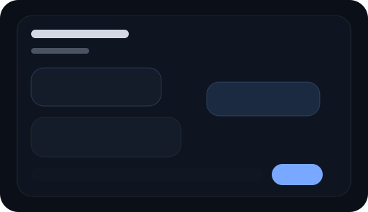
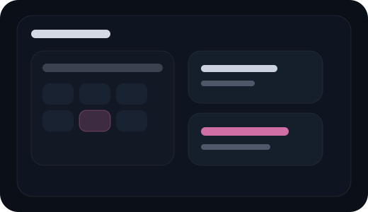
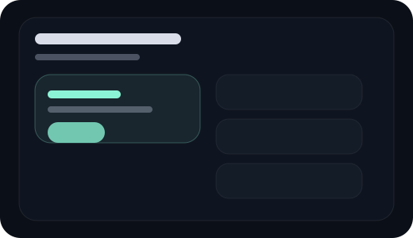
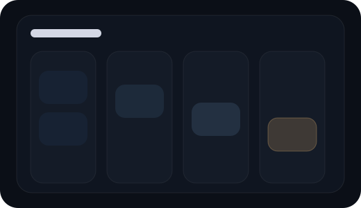

Mensagem dispersa
- Falam muito e explicam pouco.
- Escondem a oferta principal.
Mais leads. Mais resposta. Menos fuga.
Copy curta, leitura rápida e CTA no ponto certo para gerar contato.
O problema
A solução
Landing pages e páginas institucionais que explicam rápido e levam ao CTA.
Fluxos para captar, responder e organizar sem deixar lead esfriar.
WhatsApp, formulários, dashboards e bots conectados ao objetivo comercial.
Demos

Ponto forte: resposta imediata.
Abre conversa rápido e reduz tempo de resposta.
Ver demo
Ponto forte: agenda sem atrito.
Mostra horário livre e reduz no-show logo no fluxo.
Ver demo
Ponto forte: narrativa de conversão.
Organiza a oferta para aumentar clique e início de compra.
Ver demo
Ponto forte: controle visual.
Mostra pipeline claro para acelerar proposta e follow-up.
Ver demoProcesso
Objetivo, oferta e público.
Mensagem, hierarquia e CTA.
Texto curto e orientado à ação.
Layout claro para aumentar leitura e clique.
Ajustes finos de ritmo e conversão.
Página pronta para gerar conversa com mais clareza.
Pacotes
FAQ
Sim. A base foi pensada para carregar leve e manter a leitura fluida.
Sim. O CTA entra em pontos estratégicos.
Sim. A estrutura prioriza clareza e ação.
Sim. Principalmente em automações e integrações.
Depende do escopo, mas a proposta é andar rápido com direção.
Não. Também entram fluxos, bots, páginas comerciais e projetos fora do padrão.
Projetos fora do padrão
Quando o gargalo não está no layout, eu ataco o processo.